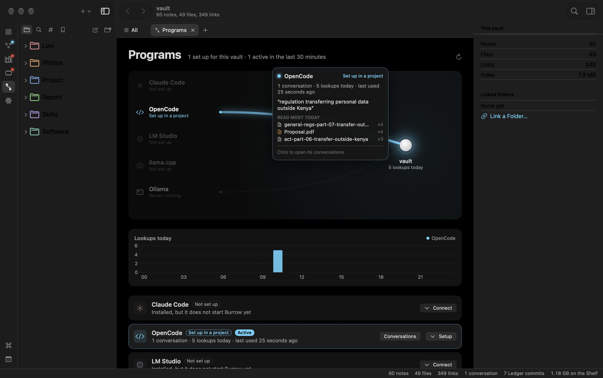

One memory for every AI you use
Burrow keeps your notes, documents and code, and every decision you made with an AI and why. Local and cloud models read it and write to it, so a private model knows what you know, and the next one picks up where the last stopped.
Apple silicon · macOS 26 or later · free. Nothing you keep leaves your Mac.
Ledger
7 commits on 3 branchesPrograms
The AI programs on this Mac, and whether each will find this vaultEvery AI starts each session knowing nothing about you. A local model doesn't know your notes, and what you settled with one model never reaches the next. Burrow keeps all of it on your Mac, for every model you use.
Ask your own material
A model on your Mac answers from your notes, documents and code, and cites the file and line. Gemma 4 12B answered 9 of 120 questions about private material alone, and 102 with Burrow.

Decisions that outlast the chat
When you settle something, your AI keeps it in the Ledger with its reason and what was turned down. Every model that connects is handed it. Once reasons were kept, Claude Code kept an earlier decision in 9 of 9 sessions.

Every program, one memory
Connect Claude Code, OpenCode, OpenClaw, Hermes Agent or n8n with one command. A different model in a different program picks up where the last one stopped. 3 of 3 handovers continued the right step.
Programs
Which AI tools reach your vault, and what each read today.

Map
Your notes and code as one graph, the way your models see it.

Checked before it's done
A model can read a decision and still break it. Burrow checks every change against the decisions it touches, inside Claude Code, OpenCode, OpenClaw, Hermes Agent and git, and holds a change that breaks one.

Plain files
Your vault stays Markdown in a folder. An Obsidian vault works as it is.
Nothing leaves
Burrow calls no cloud model. Search and answers run on your Mac.
MCP
Any program that speaks the Model Context Protocol connects.
Never deletes
A decision is replaced or marked wrong by a later one. History stays.
Teams
Share decisions through a git or synced folder, only after you approve.
Exact words
Claude Code's requests and errors are kept word for word when it compacts.
Steering flagged
Text written to steer an AI is shown to you, never handed over as a rule.
Local models first
Fits what it shows to what your model can read in time.
of the knowledge gap between Gemma 4 12B and a cloud model closed, on material neither had seen.
later Claude Code sessions kept an earlier decision once its reason was kept.
times a different program picked the work up at the right step.
A small local model still broke a decision it had read in 2 of 4 runs, which is why Burrow checks changes too. Method and every limit: the docs and project report.
Your memory is yours.
It lives in a folder on your Mac, in files you can open without Burrow.
Your AI is your choice.
Local or cloud, any program that speaks MCP. Switch whenever you like and keep everything.
Your say is final.
Approving folders, sharing with a team and overriding a decision are yours alone.